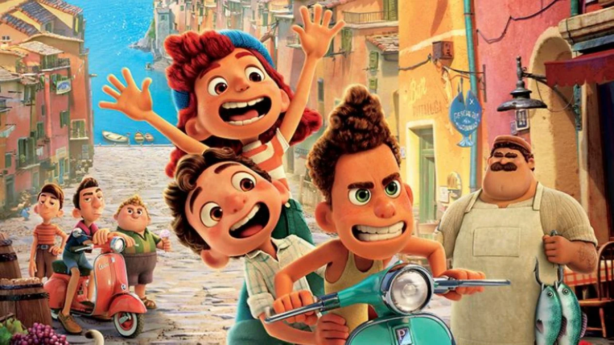

About Luca
Luca is a fictional disney fictional character. He is a sea monster, befriends alberto, another one of his kind who takes him on a land adventure.
Luca and his friends
Luca's charaterisctics
- He's sweet
- He loves to play in the land
- He loves to play with human
Luca's friends, Alberto
Luca has a fellow seamonster Alberto, they are so sweet to one another and i really enjoy watching them together. Click on the link below to read more about them: